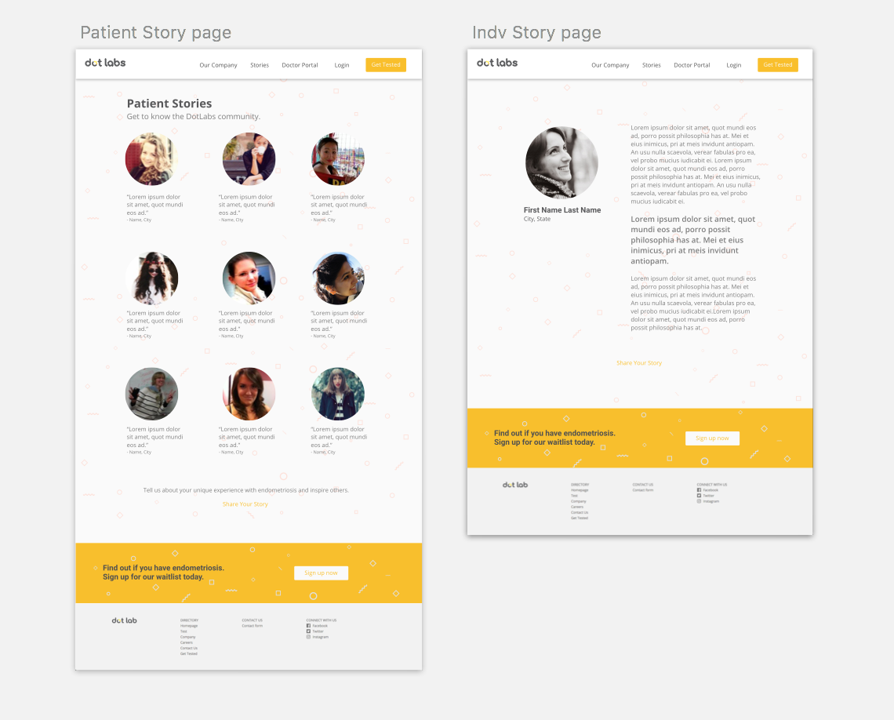
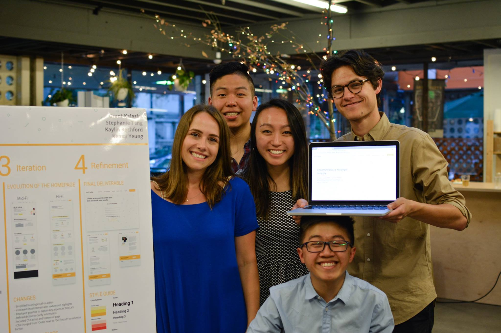

Interaction Designer and Web Developer, Jan - May 2017
During the Spring semester, my team and I partnered with Dot Labs, a healthcare startup selling the first definitive, non-invasive test to diagnose endometriosis. We worked in conjunction with Dot Labs' CEO Heather Bowerman to design a web experience that would establish the company's brand and market its transformative product.
While I helped with design efforts throughout the project, I was personally responsible for developing the high-fidelity mockups and translating them into responsive webpages.
Many women find the current experience of being diagnosed with endometriosis wrought with expensive procedures, doctors minimizing their symptoms, and years without an accurate diagnosis. Overall, their experiences have been confusing, isolating, and frustrating.
Dot Labs wants to change this. However, the company lacked a platform to do so. Our team developed a website experience that would showcase the company's innovative diagnostic tool as well as provide an edifying and supportive space for users.
In order to better familiarize ourselves with endometriosis and the women's healthcare space, we initially compiled and read an extensive amount of medical and news articles about the disease and those affected by it. Then, we conducted user interviews.
The primary goal of our research was to best understand two fundamental aspects of the experience of women who suspect they may have endometriosis:
We conducted our research using an online survey which received hundreds of responses. This method was preferable to in-person interviews as it allowed us to access more women with ties to endometriosis and maintained the interviewees’ anonymity given the sensitive nature of the topic.
We targeted endometriosis forums - communities of women concerned about the disease, both those already diagnosed and those looking for more information.
Some of the questions we asked included:
We found that women who had either been diagnosed with endometriosis or were actively seeking a diagnosis had the following shared experiences:
Using this information, we developed 3 main user personas:

Using our user research and personas, we developed the following objectives:
This is the userflow we created to map out the different interactions users may have with the website.
To address the first objective, our team heavily focused on the landing page and the "Our Test" page because both pages would be the main touchpoints for consumers to learn about and potentially purchase Dot Labs' product.
To address the second objective, our team wanted to create a communal aspect to the web experience with "Patient Stories." This would be a place for women to both share their experiences with endometriosis and read about others' stories. We hoped that this would foster the support and care that many women felt was previously absent from their experiences dealing with endometriosis.

We wanted Dot Lab's brand identity to be one that empowers women. To do so, we chose a strong yellow as our primary color. This color was particularly appropriate because it is also the ribbon color for endometriosis.
We wanted the website to have a simplistic feel, yet retain scientific validity, so we chose professional and readable typefaces - Roboto and Open Sans.

After experimenting with different visual designs, we opted for a simplistic one. Endometriosis can be confusing and frightening for many. We wanted to alleviate these feelings with clear, concise information and friendly graphics.
The rhetoric throughout the site is written with an informative and supporting tone, one that helps to create the edifying and comforting experience Dot Labs hopes to provide its users with.
After we finished the final iterations, I worked quickly to translate the designs into responsive web pages a week prior to the deadline.
Here are the final, responsive web pages we created.

These are the screens for the patient stories.
Here is the order flow for both patients and doctors.

The final screens seen above are going through constant iteration as Dot Labs expands, but all pages are continuing to leverage the brand identity that our team developed.
Our final deliverables have allowed Dot Labs to market its revolutionary product and gain increasing attention in the press and the women's healthcare space.
The final product can be seen at dotlab.com!
And here's the wonderful team that I worked with throughout the project!
